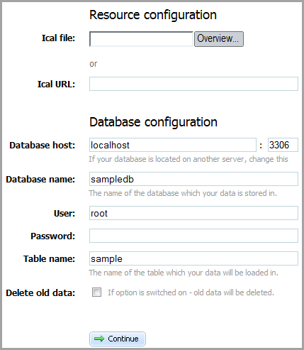

iCal export/import
You have the possibility to import/export data of iCal format by using either ready-to-use utility or API methods.
Download the iCal exporter utility: http://www.dhtmlx.com/docs/download/ical2scheduler.zip
iCal exporter (Front-end)

The front-end of the utility consists of two parts: Resource configuration and Database configuration.
In the first part you should set path to the data. You may do this by either choosing it from the opened dialog window (Ical file, the button “Overview”) or specifing the path mannually (Ical URL).
The second part contains the standart settings of the database which you want to save the iCal data in: host, database and table names, user's name and password. Also here you may set whether or not your old data must be deleted (Delete all data).
API Methods
Here you can find all the API methods that can be used to implement iCal export/import in an app.
Initialization
To initialize iCal exporter/importer you should use the following code:
require_once("codebase/class.php"); $export = new ICalExporter();
- iCalendar import
You can import iCal data using the following:
setTitle($title) //sets title of ical file in toICal method getTitle() //gets title of ical toICal($events) //converts the information from the array or xml string to icalendar format
- iCalendar export
You can export iCal data using the following:
toHash($ical) //converts ical string to array of events toXML($ical) //converts ical string to XML
Examples
A number of code snippets that show how to execute iCal export/import are presented here.
- Setting iCalendar title
The following code allows you to set the title of imported/exported iCalendar data.
$xml = file_get_contents("events_rec.xml"); require_once("codebase/class.php"); $export = new ICalExporter(); $export->setTitle("Calendar name"); $ical = $export->toICal($xml); file_put_contents("ical.ics", $ical);
- Array of events
It's an example of events' array that is reffered in import/export data from/to array.
$events = array( array( "id" => 1, "start_date" => "2010-04-05 08:00:00", "end_date" => "2012-04-09 09:00:00", "text" => "text1", "rec_type" => "week_2___3,5", "event_pid" => null, "event_length" => 3600 ), array( "id" => 2, "start_date" => "2010-04-06 12:00:00", "end_date" => "2010-04-06 18:00:00", "text" => "text2", "rec_type" => "", "event_pid" => null, "event_length" => null ), array( "id" => 3, "start_date" => "2010-04-07 12:00:00", "end_date" => "2010-04-07 18:00:00", "text" => "text3", "rec_type" => "", "event_pid" => null, "event_length" => null ), array( "id" => 4, "start_date" => "2010-04-08 12:00:00", "end_date" => "2010-04-08 18:00:00", "text" => "text4", "rec_type" => "", "event_pid" => null, "event_length" => null ) );
- From Array to iCal
This code you may use to export data from array to iCal.
require_once("codebase/class.php"); $export = new ICalExporter(); $ical = $export->toICal($events); file_put_contents("ical.ics");
- From XML to iCal
This code you may use to export data from XML to iCal.
$xml = file_get_contents("events_rec.xml"); require_once("codebase/class.php"); $export = new ICalExporter(); $ical = $export->toICal($xml); file_put_contents("ical.ics");
- From iCal to Array
This code you may use to export data from iCal to array.
$ical = file_get_contents("ical.ics"); require_once("codebase/class.php"); $export = new ICalExporter(); $events = $export->toHash($ical);
- From iCal to XML
This code you may use to export data from iCal to XML.
$ical = file_get_contents("ical.ics"); require_once("codebase/class.php"); $export = new ICalExporter(); $xml = $export->toXML($ical); file_put_contents("events_rec.xml", $xml);